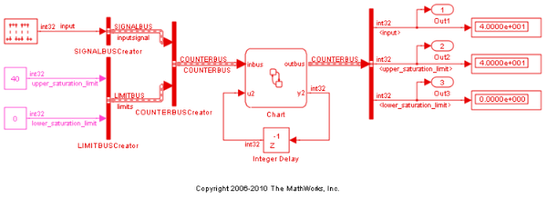

Interface Simulink® Bus Signals & Integrate Custom C Code
This demonstration shows how to interface Simulink® bus signals with a Stateflow® chart, how to define Stateflow data of structure type using Simulink.Bus object, and how to integrate custom C code with structure typed data.
In this mode, both inbus and outbus are bus signals used in Stateflow. Both variables are defined as Bus Objects of type COUNTERBUS, a bus type that was created in the Bus Editor. This bus type is stored in the bus_objects.mat file, which is loaded in the model's PreLoad function.
